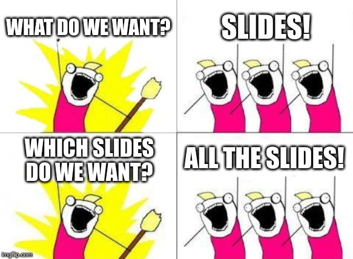
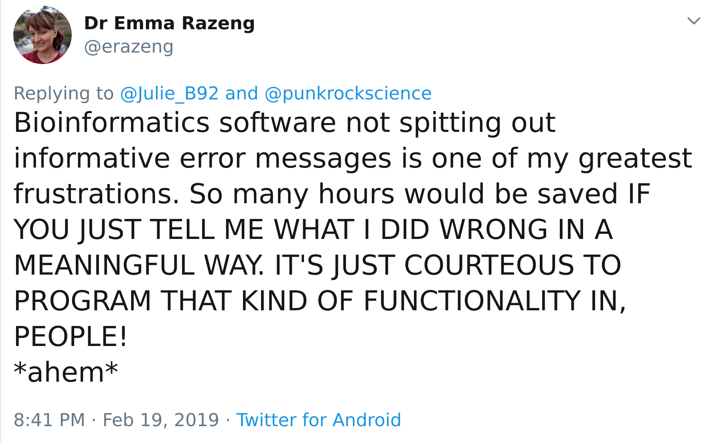
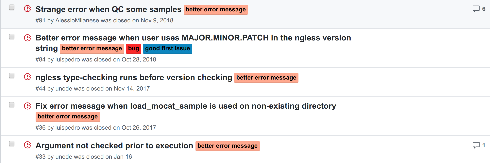
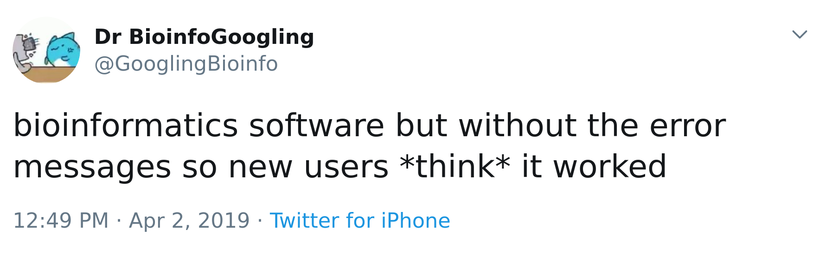
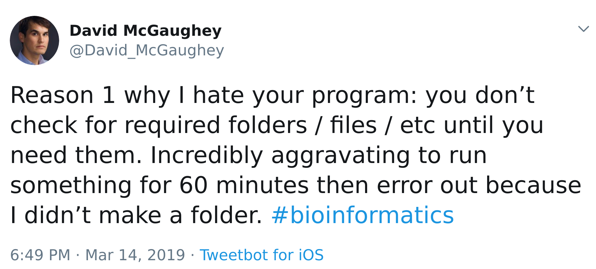
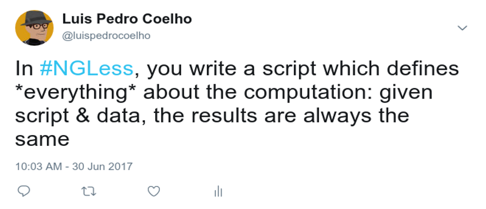

NGLess: a domain-specific language for NGS analysis
(the NG-meta-profiler case study)
Luis Pedro Coelho, Renato Alves, Paulo Monteiro, Jaime Huerta-Cepas, Ana Teresa Freitas
and Peer Bork
luispedro@big-data-biology.org
 @luispedrocoelho
@luispedrocoelho

If you are going to be taking any pictures of the slides...
Just take a pic of this one and get all the slides:

https://luispedro.github.io/2019-07-25-ngless.talk/
Research question
Setting: Pipelines combining different tools are important and there are many solutions for them.
If we are willing to sacrifice workflow generality to focus specifically on bioinformatics can we build a better language and a better tool?
What is meant by better tool?
- Correctness
- Usability
- Reproducible
- Understandability
- Support best practices
- Performance
(in this order)
What do we want from our bioinformatics pipelines
Usability
- Work out of the box
- Single click/single command
- Usable by domain experts
- Highly flexible (adapt to specific domain)
- Integratable into many settings
- Friendly to bioinformaticians
Stability
- Reproducible
- Stable over many years
- Evolve with time (agile)
- New versions coming out fast
NGLess
#!/usr/bin/env ngless
ngless "1.0"
import "mocat" version "1.0"
import "specI" version "1.0"
import "motus" version "1.0"
import "igc" version "1.0"
input = load_mocat_sample(ARGV[1])
RESULTS = ARGV[2]
qc_reads = preprocess(input, keep_singles=False) using |read|:
read = substrim(read, min_quality=25)
if len(read) < 45:
discard
human_mapped = map(qc_reads, reference='hg19')
non_human = select(human_mapped) using |mr|:
mr = mr.filter(min_match_size=45, min_identity_pc=90, action={unmatch})
if mr.flag({mapped}):
discard
non_human_reads = as_reads(non_human)
igc_mapped = map(non_human_reads, reference='igc', mode_all=True)
igc_mapped_post = select(igc_mapped) using |mr|:
mr = mr.filter(min_match_size=45, min_identity_pc=95, action={drop})
if not mr.flag({mapped}):
discard
igc_counts = count(igc_mapped_post,
features=['OGs'],
multiple={dist1},
normalization={scaled})
write(igc_counts,
ofile=RESULTS </> 'eggNOG.traditional.counts.txt',
auto_comments=[{hash}, {script}]) As a programming language
- Imperative style (as are most widely used languages in bioinformatics, see Carey et al., 2018)
- Python/Ruby inspired-syntax
- Statically-typed, but with inferred types
- Limited functionality (not Turing-complete)
Adapted to bioinformatics (specifically NGS)
Types
- ShortRead
- ShortReadSet
- InputFile
- OutputFile
- ...
NGLess fails well
Too many tools work well, but fail badly
Most time in software development is used in debugging [CITATION NEEDED].
We treated bad error messages as bugs
Sometimes, these are the hardest bugs to fix!
Still, please report bad error messages.
Fail clearly

- Never output wrong results
- Never output partial results
- Fail as fast as possible
Check inputs/outputs
- Input/output arguments are annotated as such, so they are checked as soon as possible
Check output example
ngless "1.0"
import "igc" version "1.0"
import "batch" version "1.0"
input = "inputs/sample.gz.fq"
seq = fastq(input)
mapped = map(seq, reference='igc')
write(mapped, ofile='outputs/sample/igc-mapped.bam') - Very simple: check right at the beginning.
Check output example II
ngless "1.0"
import "igc" version "1.0"
import "batch" version "1.0"
inputs = readlines('samples.txt')
current = inputs[JOBINDEX_OR_0]
seq = fastq('input/' + current + '.gz.fq')
mapped = map(seq, reference='igc')
write(mapped, ofile='outputs/' + current + '/igc-mapped.bam') - A little more complex, but we check right after the line assigning to the
currentvariable.
You can annotate the outputs with the NGLess script
write(result,
ofile='outputs.tsv',
auto_comments=[{hash}, {script}]) # Output hash: 48653e1bfc521626e0181a5b0b462805
# Output generated by:
# ngless "1.0"
#
# counted = count(samfile('input.sam'),
# features=['seqname'],
# multiple={dist1})
# write(counted,
# ofile='outputs.tsv',
# auto_comments=[{hash}, {script}])
basic
-1 0
122_DCM_0d2-0d45_scaffold97490_1_gene122702 2
The output is annotated with the code & a machine-readable hash of it
NGLess is versioned
ngless "1.0"
import "igc" version "1.0"
import "batch" version "1.0"- We can fix mistakes in the language/function API while preserving backwards compatibility.
Separate out "incidental information"
- If it changes the results, it must be reflected in the script
- Otherwise, it is configuration:
- Where to store temporary files
- How many threads to use
- ...
Incidental information is everything that is not central to what you want to compute.
NGLess functionality (v1.0)
Builtin functionality
- FastQ samples preprocessing (internally implemented)
- Mapping (through bwa, Li, 2013 or minimap2 Li, 2018)
- Assembly (through megahit, Li et al., 2015)
- ORF calling (through prodigal, Hyatt et al., 2010)
- Profiling of samples (internally implemented)
- Filtering of SAM/BAM files (internally implemented)
- ...
NGLess is extensible
- By writing code
- By writing a text file
At github.com/ngless-toolkit/ngless-contrib, we have started a collection of external modules for integration with NGLess:
- MetaPhlAn (Truong et al., 2015)
- Salmon (Patro et al., 2017)
- ...
NGLess Module Example
version: 2.1.0
name: motus
functions:
-
nglName: motus
arg0: ./run.sh
arg1:
atype: readset
can_gzip: true
additional:
-
name: taxonomic_level
atype: option
def: mOTU
allowed:
- kingdom
- phylum
- class
- order
- family
- genus
- mOTU
return:
rtype: counts
name: ofile
extension: tsv
init:
init_cmd: ./run.sh
citation: >
Alessio Milanese, Daniel R Mende, Lucas Paoli, Guillem Salazar,
Hans-Joachim Ruscheweyh, Miguelangel Cuenca, Pascal Hingamp, Renato Alves,
Paul I Costea, Luis Pedro Coelho, Thomas S B Schmidt, Alexandre Almeida,
Alex L Mitchell, Robert D Finn, Jaime Huerta-Cepas, Peer Bork, Georg Zeller
and Shinichi Sunagawa. Microbial abundance, activity and population genomic
profiling with mOTUs2; Nature Communications 10, Article number: 1014
(2019). doi: 10.1038/s41467-019-08844-4
Module for running mOTUs2 (Milanese*, Mende*, et al., 2019)
Make best practices easier/automatic
- Best practice: version all the things
- Best practice: cite your tools
- Best practice: quality control your data/outputs
- Best practice: isolate system-specific information
With NGLess, these are all easier and/or automatic.
NG-meta-profiler:
- For metagenomics profiling: Take metagenomes and produce feature tables
- Based on well-validated approach:
- Use a prebuilt gene catalogue
- Annotate this catalog (with eggnog-mapper, Huerta-Cepas et al., 2017)
- Map short reads against this catalog
- Transfer the annotation from the genes to the reads
Available for different environments


NG-meta-profiler is fast
- NGLess profiling scales to the very large gene databases that we use in metagenomics (e.g., ocean catalog has 40 million genes)
Where to learn more


conda install ngless- Coelho et. al, 2019: NG-meta-profiler: fast processing of metagenomes using NGLess, a domain-specific language
- NGLess webpage: https://ngless.embl.de/
 ngless-toolkit/ngless
&ngless-toolkit/ng-meta-profiler
ngless-toolkit/ngless
&ngless-toolkit/ng-meta-profiler
- NGLess users' mailing list
Summary
- NGLess is a domain-specific language for NGS
- A domain specific language sacrifices generality for a better user experience
- Version 1.0 was recently released
- NG-meta-profiler is a collection of pipelines written in NGLess
Acknowledgements
- Renato Alves (EMBL, Heidelberg, Germany)
- Paulo Monteiro (IST, Lisbon, Portugal)
- Jaime Huerta-Cepas (EMBL, Heidelberg, Germany)
- Ana Teresa Freitas (IST, Lisbon, Portugal)
- Peer Bork (EMBL, Heidelberg, Germany)
- All the users who submitted bug reports (or praised)
Thank You
Join us in Shanghai!
Several postdoc positions open: http://big-data-biology.org/positions/
Talk to me during the break!